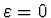
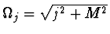
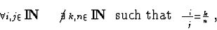
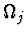
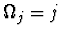

Let us consider periodic solutions for equation (1), provided
that
 is small or, equivalently, that these solutions have
small amplitudes.
is small or, equivalently, that these solutions have
small amplitudes.
An asymptotic expansion, containing only bounded functions, is called a uniform expansion. The possibility to obtain a uniform expansion, using standard asymptotic methods [7], for example, Poincare-Lindstedt [8] or Krylov-Bogoliubov [9] ones, depends on values of the frequencies in zero approximation. If

, then equation (1) is a linear one and has periodic solutions of the form (2) with frequencies in time
, whereIf

then it is a non-resonance case.
The periodic asymptotic solutions in non-resonance case are well known. To obtain these solutions with any degree of exactness standard asymptotic methods can be used.
The resonance case, when there exist two frequencies

, whose relation is rational, is more difficult. The Krylov-Bogoliubov method and the standard variant of the Poincare-Lindstedt method allow to find periodic solutions only in a few leading orders in
The important example of resonance case is the massless  theory
when
theory
when

and all relations of frequencies are rational. It is the main resonance case. Using the standard asymptotic methods one cannot construct a periodic solution even to the first order in